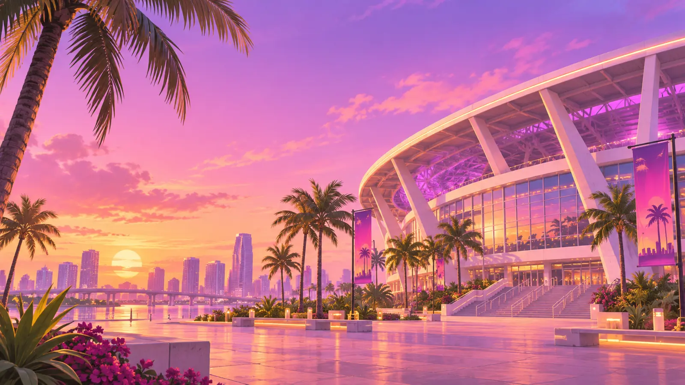
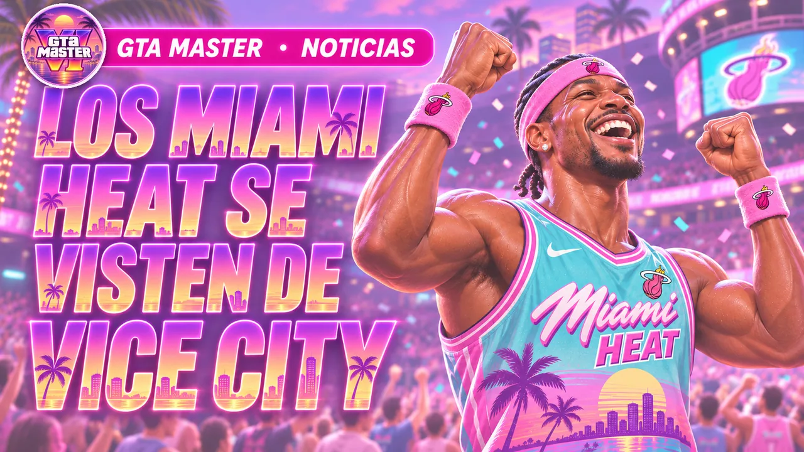

NoticiasLos Miami Heat se convierten en «Vice City» esta noche: camiseta, pista y hora del partido

La víspera del lanzamiento, los Miami Heat juegan contra los Bucks como «Vice City», con pista propia y camisetas diseñadas con Nike y Cactus Jack. Se juega a la 01:00 hora peninsular.
Si alguien dudaba de hasta dónde llega el marketing de GTA 6, la respuesta está en la NBA. Esta noche, la víspera del lanzamiento, los Miami Heat dejan de ser los Miami Heat: reciben a los Milwaukee Bucks en el Kaseya Center con el nombre de Vice City.
El evento se llama «A Night in Vice City» y forma parte de una campaña que lleva semanas tomando la Miami real. Según GTABoom, el partido empieza a las 7 de la tarde, hora del Este de Estados Unidos. En España, a la 01:00 de la madrugada del jueves, con el juego ya desbloqueado en nuestras consolas.
La camiseta: seis estrellas rosas
Los uniformes se han diseñado con Nike y con Cactus Jack, el sello de Travis Scott. Hay dos versiones, según detalla Altchar:
- La de juego, más sobria por las normas de uniformes de la NBA, con el mapa de GTA dentro del logo de los Heat y el logotipo de Nike invertido.
- La de aficionado, con «Vice City» en letra cursiva, un «VI» en el pecho y seis estrellas rosas: el nivel máximo de búsqueda.
Un guiño para los que saben: en la saga, las estrellas marcan cuánto te busca la policía.
Una pista que nunca se ha visto
El parqué de siempre se sustituye por una pista diseñada para la ocasión, con la marca Vice City y una combinación de negro y rosa inspirada en la estética de neón del juego, como describe Man of Many. Hasta Ticketmaster anuncia el partido como «Milwaukee vs. Vice City», según Inven Global.
El partido se emite en ESPN y la tienda del equipo ya vende una colección de ropa Vice City. Ojo: Notebookcheck aclara que esa colección es del sello Court Culture de los Heat y va aparte del merchandising oficial de Rockstar.
Miami ya es Vice City
La noche de los Heat es la pieza más visible de una campaña más grande. GTABoom habla de pancartas de GTA 6 aprobadas por el ayuntamiento en una zona del centro, y en septiembre ya apareció un cartel de «Welcome to Vice City» en el tejado del Kaseya Center. Durante unas horas, la Miami real y la de Rockstar son el mismo sitio. Mañana, el resto del mundo se muda allí.
¿Quieres saber cómo cambia Vice City cuando cae la noche? Lo analizamos en el canal:


Comentarios
Los comentarios funcionan con Disqus: puedes entrar con Google, Facebook, X o tu email. Al pulsar el botón se conecta con Disqus, que usa sus propias cookies. Más información en nuestra política de privacidad.